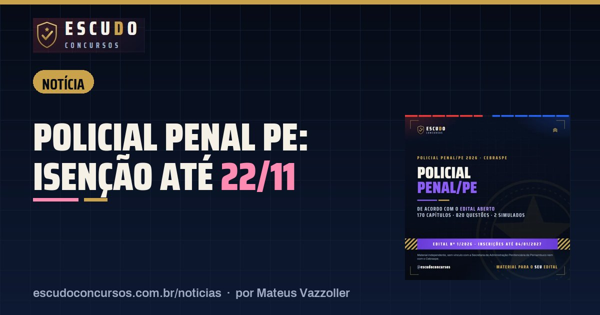

Policial Penal PE: resultado da isenção sai de 8 a 11/12 e o final em 29/12/2026
NotíciaPublicado em 20 de novembro de 2026, atualizado em 23 de novembro de 2026 · por Mateus Vazzoller, ESCUDO Concursos

Atualização em 23/11/2026: O pedido de isenção terminou em 22/11. O resultado provisório sai de 8 a 11/12/2026, com recurso de 9 a 11/12, e o resultado final em 29/12/2026. Quem tiver o pedido negado ainda pode se inscrever pagando o boleto de R$ 250,00 até 06/01/2027 (as inscrições vão até 04/01/2027, às 18h). A prova é em 21/03/2027.
| Órgão | Secretaria de Administração Penitenciária e Ressocialização (SEAP/PE), com a SAD |
|---|---|
| Banca | Cebraspe |
| Vagas | 700 (537 no quadro masculino e 163 no feminino) |
| Resultado provisório da isenção | 8 a 11/12/2026, com recurso de 9 a 11/12 |
| Resultado final da isenção | 29/12/2026 |
| Inscrições | Até 04/01/2027, às 18h; taxa de R$ 250,00 paga até 06/01/2027 |
| Prova | 21/03/2027, à tarde |
Quem quer vestir a farda de Policial Penal de Pernambuco sem pagar a taxa de R$ 250,00 tem até domingo, 22/11/2026, às 18h (horário de Brasília) para pedir isenção na Área do Candidato do Cebraspe. O pedido é feito junto com a própria inscrição. Depois desse horário, quem quiser disputar uma das 700 vagas da SEAP/PE precisa gerar o boleto, que pode ser pago até 06/01/2027.
Curso ESCUDO Policial Penal de Pernambuco em PDF: 170 capítulos e 820 questões, de acordo com o edital aberto, 2 simulados de 60 questões. De R$ 47 por R$ 37 com o cupom PPPE37 até 04/01/2027.
Ver o curso
Quem tem direito à isenção no concurso da SEAP/PE?
O edital segue o art. 19 da Lei estadual nº 14.538/2011 e aceita oito situações. Em todas, a isenção é total. Cada uma pede um comprovante diferente:
| Situação | O que comprova |
|---|---|
| Família de baixa renda no CadÚnico | Número do NIS e declaração de hipossuficiência, preenchidos no próprio sistema |
| Doador regular de sangue | Registro de 3 doações (homens) ou 2 (mulheres) nos 12 meses antes do edital |
| Doador de medula óssea | Inscrição no REDOME há pelo menos 12 meses, com declaração de entidade reconhecida pelo Estado |
| Doador de livros ao Banco do Livro de Pernambuco | Registro de doação de 50 livros nos últimos 12 meses |
| Ensino médio ou técnico em escola pública há menos de três anos, com baixa renda | Certificado ou histórico escolar e declaração de hipossuficiência |
| Pessoa com deficiência | Laudo emitido nos 36 meses anteriores ao último dia de inscrição, no modelo do Anexo II |
| Doadora regular de leite materno | Documento de entidade reconhecida pelo Governo do Estado |
| Jurado do Tribunal do Júri em Pernambuco | Certidão de participação no Conselho de Sentença nos últimos dois anos |
No caso do laudo de pessoa com deficiência, a validade é indeterminada para o Transtorno do Espectro Autista e para impedimentos irreversíveis: a data de emissão não conta.
Como fazer o pedido até domingo
O pedido é feito só pela internet, na página do concurso no Cebraspe. No CadÚnico, basta informar o NIS e preencher a declaração; o Cebraspe confere os dados com o órgão gestor. Nos outros sete casos, é preciso enviar a imagem legível do documento, em PDF, PNG, JPEG ou JPG, com no máximo 2 MB por arquivo. Imagem ilegível ou ausente faz o pedido ser indeferido.
O edital não aceita pedido pelo correio, por e-mail, por requerimento administrativo ou fora do prazo. Até as 18h de domingo, também dá para desistir da isenção e imprimir o boleto pela página de acompanhamento. Guarde os documentos originais: o Cebraspe pode pedi-los por carta registrada para conferir a veracidade, e informação falsa elimina o candidato.
Deixar para a última hora é o erro mais comum: arquivo grande demais ou ilegível derruba o pedido, e não há segunda chance depois das 18h de domingo.
E depois do pedido?
| Etapa | Data |
|---|---|
| Fim do pedido de isenção | 22/11/2026, 18h |
| Resultado provisório da isenção | 8 a 11/12/2026 |
| Recurso contra o indeferimento | 9 a 11/12/2026 |
| Resultado final da isenção | 29/12/2026 |
| Fim das inscrições | 4/1/2027, 18h |
| Último dia para pagar o boleto | 6/1/2027 |
| Provas objetivas e discursiva | 21/3/2027, à tarde |
Quem tiver o pedido negado não perde a vaga na disputa: basta pagar o boleto até 06/01/2027. O boleto pode ser pago em banco, lotérica ou Correios, mas precisa ser o gerado no sistema do Cebraspe. Pix, depósito e transferência não valem.
Quem pode ser Policial Penal em Pernambuco?
O cargo exige diploma de nível superior em qualquer área e CNH categoria B, no mínimo. A remuneração é de R$ 5.667,92, somando o vencimento-base e a Gratificação de Risco por Função Policial Penal. No dia a dia da unidade prisional, o Policial Penal faz revista, contagem de presos, rondas, escolta, custódia e monitoramento eletrônico, sempre com base na Lei de Execução Penal, que é um dos pilares da prova. O que cai e como estudar está no guia do concurso Policial Penal PE.
Curso ESCUDO Policial Penal de Pernambuco em PDF: 170 capítulos e 820 questões, de acordo com o edital aberto, 2 simulados de 60 questões. De R$ 47 por R$ 37 com o cupom PPPE37 até 04/01/2027.
Ver o curso
Perguntas frequentes
Até quando posso pedir isenção da taxa da Polícia Penal de PE?
Até domingo, 22/11/2026, às 18h no horário de Brasília, pela Área do Candidato no site do Cebraspe.
Qual é a taxa de inscrição para Policial Penal PE?
R$ 250,00, paga só por boleto bancário gerado no sistema do Cebraspe, até 06/01/2027.
Quando sai o resultado do pedido de isenção?
O resultado provisório pode ser consultado de 8 a 11/12/2026, com recurso de 9 a 11/12, e o resultado final sai em 29/12/2026.
Leia também
- Rotina de estudosCronograma de estudos Policial Penal PE: 16 semanas até a prova de 21/03/2027
25 de novembro de 2026 · Plano de 16 semanas para a prova do Cebraspe de 21/03/2027 para Policial Penal de Pernambuco: 15 horas por semana, Execução Penal primeiro e discursiva semanal.
- NotíciaGM Campinas: inscrições e pedido de isenção abrem quarta, 25/11, às 10h
24 de novembro de 2026 · Inscrições da Guarda Municipal de Campinas abrem quarta, 25/11, às 10h, no site da Vunesp. Isenção até 02/12, inscrições até 08/01/2027 e taxa de R$ 67,90.
- NotíciaTRT-4 Técnico Judiciário: inscrições encerradas; vagas reservadas saem em 10/12 e a prova é em 31/01/2027
23 de novembro de 2026 · Concurso TRT-4 (RS): inscrições para Técnico Judiciário encerradas. Vagas reservadas e pedidos especiais saem em 10/12, convocação em 11/01 e prova em 31/01/2027.
Guia completo do concurso: edital, vagas e o que cai · Mais notícias e dicas de concursos